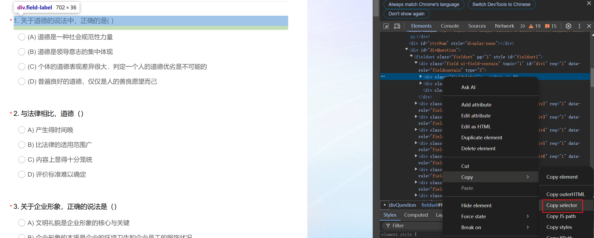
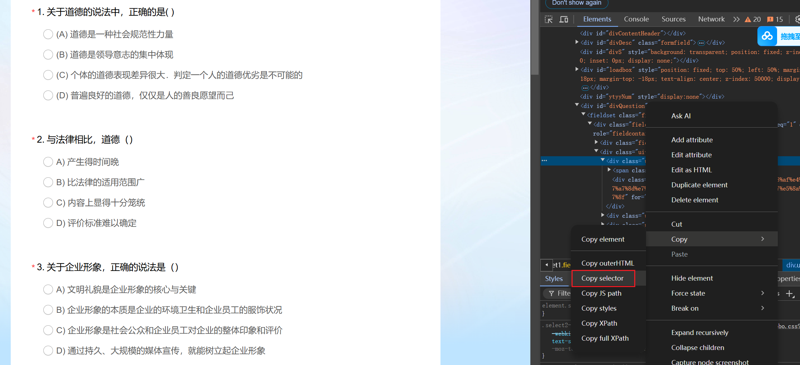
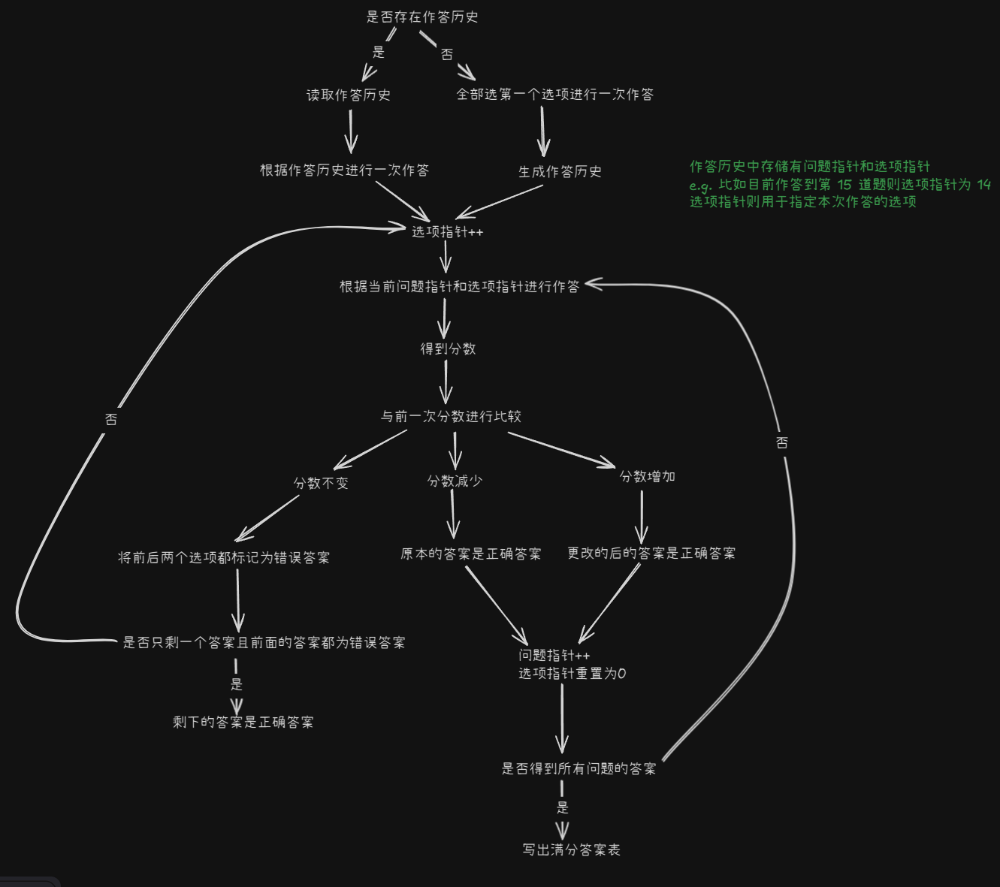

问卷星自动答题脚本
项目链接：https://github.com/VGDXHan/Automatic-Questionnaire_Script_With_DeepSeek
1 方法 1：基于逻辑判断
- 优点：可以得到满分答案
- 局限：只适用单选题且题目不从题库随机抽取（否则状态空间很大，很难收敛）
1.1 网页交互部分
通过 playwright 与网页交互、获取网页上的数据
安装
1 | conda config --add channels conda-forge |
同步模式与异步模式的区别
- 同步模式：依赖多线程（资源开销大），基于线程阻塞，每一步操作等待完成后再继续执行
- 异步模式：单线程高效处理多任务（协程切换成本低），基于协程，非阻塞执行
同步模式使用方法
1 | from playwright.sync_api import sync_playwright |
1 | def open_questionaire(self, url: str = 'http://www.baidu.com'): |
headless=False 意味着展示浏览器操作，调试完毕后可以将其设置为 true 提高运行效率
提取页面元素
核心是使用 locator 方法
该方法针对 page 对象使用，传入 selector 参数
可在网页上根据如下方法获取 selector：
- 按 F12
- 上方选择栏中 Elements
- 找到需要的元素，右键>Copy>Copy Selector
- 以 str 形式粘贴到 locator 的参数中

1 | def extract_qa(self, page): |
对 page. locator 返回的对象使用 inner_text 或 all_inner_texts 方法获得 selector 对应元素的文本内容
点击选项

对 page. locator 返回的对象调用 click 方法进行点击操作
1 | page.locator("#div1 > div.ui-controlgroup.column1 > div:nth-child(1)").click() |
按钮验证
1 | if page.locator(self.valid_button_selector).count() > 0: |
valid_button_selector 存储着验证按钮对应的 selector 值，对 page. locator 返回的对象调用 count 方法返回 selector 对应元素的数量，如果网页中这个元素的数量大于 0（即该页面存在该元素），则定位到该按钮进行点击
1.2 求解部分
判断逻辑如图：

2 方法 2：基于 deepseek
- 优点：适用所有题型
- 局限：无法获得满分
网页交互部分与方法 1 一致，不赘述
求解部分使用 deepseek 实现
Deepseek api 的使用方法如下：
1 | client = OpenAI(api_key=self.params.api_key, base_url=self.params.base_url) |
通过提示词设置让 Deepseek 生成指定格式的答案，在再后面的程序进行解析与选择即可
我给的提示词是：
1 | 我上面向你提供的是一个问卷的提取文本，不同题目间用换行符进行了间隔，你必须严格按照下列要求作答\ |
读取答案部分代码如下，由于 Deepseek 生成的答案有随机性，所以需要对其答案的正确性进行简单判断（这里是判断答案数量对不对）
1 | with open(self.params.ANSWERS_PATH, 'r') as f: |
本博客所有文章除特别声明外，均采用 CC BY-NC-SA 4.0 许可协议。转载请注明来源 XHan！